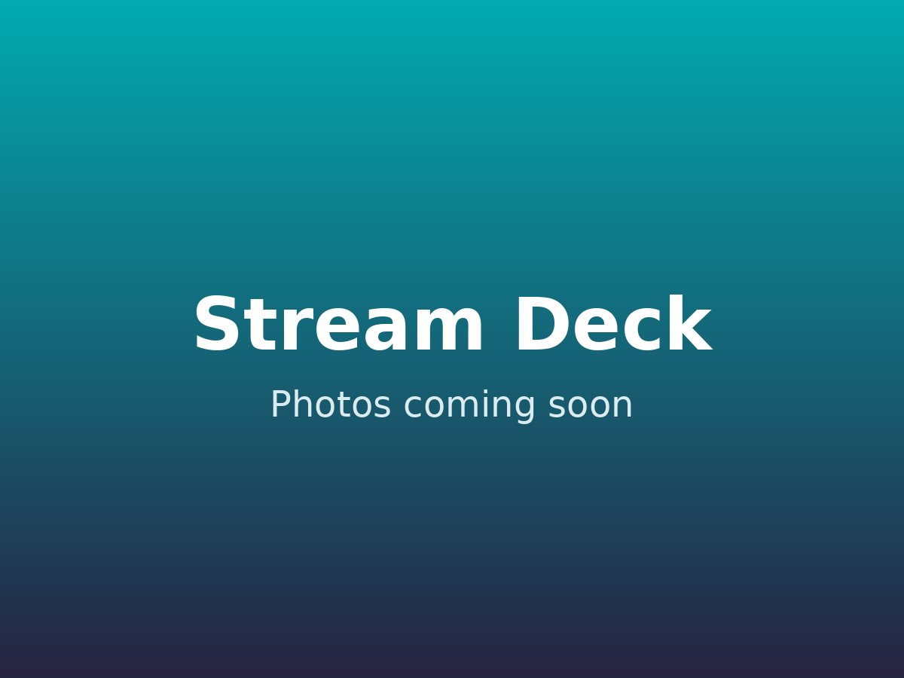

Stream Deck
A custom macro keypad I’m designing from scratch, from the circuit board to the app that assigns its buttons.
- When
- Fall 2026 – present
- My role
- Solo project
- Tools
- Altium, SolidWorks

Why I started
Nothing on the market did quite what I wanted, and building my own was a low-risk way to get hands-on circuit design experience.
Progress so far
- Defined most of the electrical and functional requirements.
- Started component selection.
Next steps
- Design the circuit in Altium to meet all of the electrical and functional requirements.
- Write the firmware, and build an app for assigning macros to each button.
- Lay the groundwork for using it as a smart home hub.